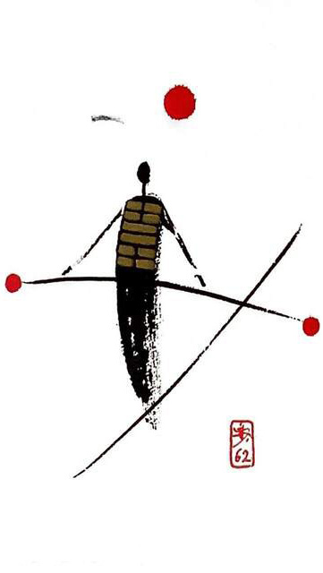

뇌산소과 (작을 소.지날 과)
소흉괘 4
중용에 어긋나면 이득이 없다
불안하고 위태로운 모습으로 줄타기를 하는 사람.막대기로 조심스럽게 균형을 맞추고 있는 상황을 표현한 그림간단히 하고 천천히 하자.작은 일은 이루고 큰일은 어려움(사서 걱정. 지나고 나면 별거 아님)
조금 지나치다.작은 불안.작은 실수.작은 허물.조금위험.
연애운
관계가 곧 깨질 듯 위태롭고 불안함.늘 망설임
사업운
가시밭길.불편하고 긴장됨.노력에 비해 수확량이 많지 않다. 인간관계 갈등
속마음
썸어떻게 해야 하나 이럴까 저럴까 망설이는 마음
1년 이상위태롭고 불안한 마음
이별 후이러지도 저러지도 못하고 어찌할 바를 모르는 마음
솔로연애운
새로운 이성 생길 확률 낮다
건강운
시기를 놓치면 오래 간다.요통.신장.신경계통 주의